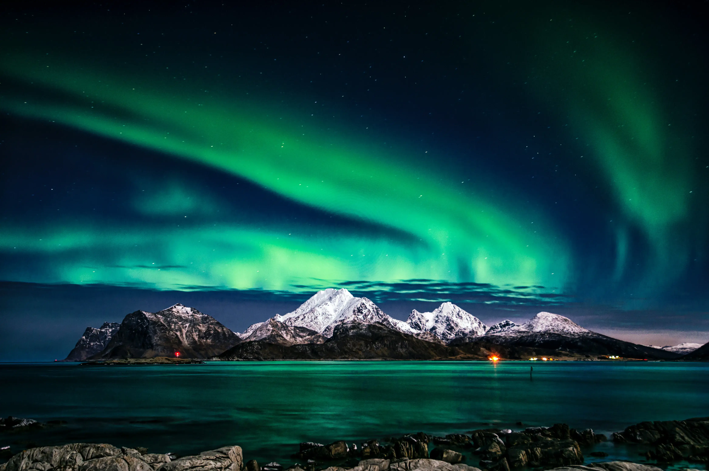
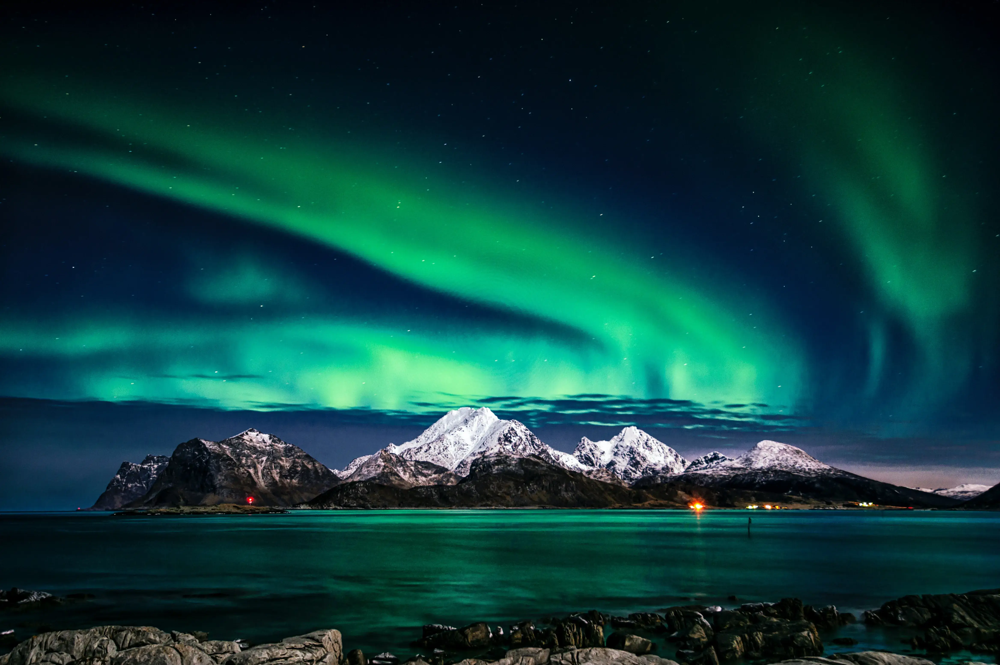

Подорож наповнена гірськими ландшафтами, льодовиками та глибокими фіордами. Ідеальна для тих, хто хоче відчути всю силу природи.
Дати: 14, 17 січня, 5 лютого
15 000 грн.
ДетальнішеНезабутня подорож найцікавішими місцями Норвегії. Поєднує в собі найкраще в норвезькій культурі та природі.
Дати: 11, 19 червня, 5 травня
12 500 грн.
ДетальнішеДля любителів драйву, швидкості та свободи, пропонуємо тур найзахопливішими місцями норвезьких гір.
Дати: 21, 24 грудня, 4 січня
14 000 грн.
ДетальнішеТур для тих, хто хоче відвідати найкрасивіші та найпопулярніші місця Норвегії. Ваші друзі будуть в захваті. Ідеальний тур для блогерів.
Дати: 14, 17 січня, 5 лютого
17 000 грн.
ДетальнішеПодорож наповнена гірськими ландшафтами, льодовиками та глибокими фіордами. Ідеальна для тих, хто хоче відчути всю силу природи.
Дати: 14, 17 січня, 5 лютого
15 000 грн.
ДетальнішеНезабутня подорож найцікавішими місцями Норвегії. Поєднує в собі найкраще в норвезькій культурі та природі.
Дати: 11, 19 червня, 5 травня
12 500 грн.
ДетальнішеДля любителей драйва, скорости и свободы предлагаем, предлагаем тур по самым захватывающим местам норвежских гор.
Даты: 21, 24 декабря, 4 января
28 000 ₽
ПодробнееФіорди
Фіорд- це вузька звивиста морська затока зі скелястими берегами, що глибоко врізається в сушу.
Норвегія має найбільшу протяжність фіордів у світі.
Якщо брати до уваги всі фіорди та острови, то протяжність берегової лінії становитиме понад100тис.км.
Согне-фіорд- найглибший і найбільший фіорд Норвегії, прославлений масштабами і ефектністю своїх пейзажів. Основний канал простягається на 204 км вглиб країни, а невеликі мальовничі рукава, такі як Аурландс-фіорд і Нерой-фіорд, простяглися на північ і південь.
Фіорд проходить через багато муніципалітетів: Солунн, Гюлен, Гюддестад, Гейангер, Вік, Балестранн, Лейкангер, Согндал, Лердал, Еурланн, Ордал І Люстер. Фіорд має максимальну глибину 1308 м нижче рівня моря, а найбільші глибини — у внутрішніх частинах фіорда. Поблизу його гирла дно різко піднімається до сіллу близько 100 м нижче рівня моря. Середня ширина основного рукава Согнефіорда становить близько 4,5 км. Скелі, що оточують фіорд, піднімаються майже прямовисно з води на висоту до 1000 метрів і більше.
Ксенія Омцева
Гід-історик
Досвід роботи гідом: 6 років
Розповість вам усе найцікавіше з історії Норвегії
Матвій Сергієв
Гід-інструктор
Досвід роботи гідом: 10 років
Побудує незабутній маршрут і поділиться головними секретами досвідчених альпіністів
Андрій Вахрушев
Фотограф
Топовий фотограф зафіксує найкращі моменти з подорожі, щоб назавжди зберегти ваші спогади
 
